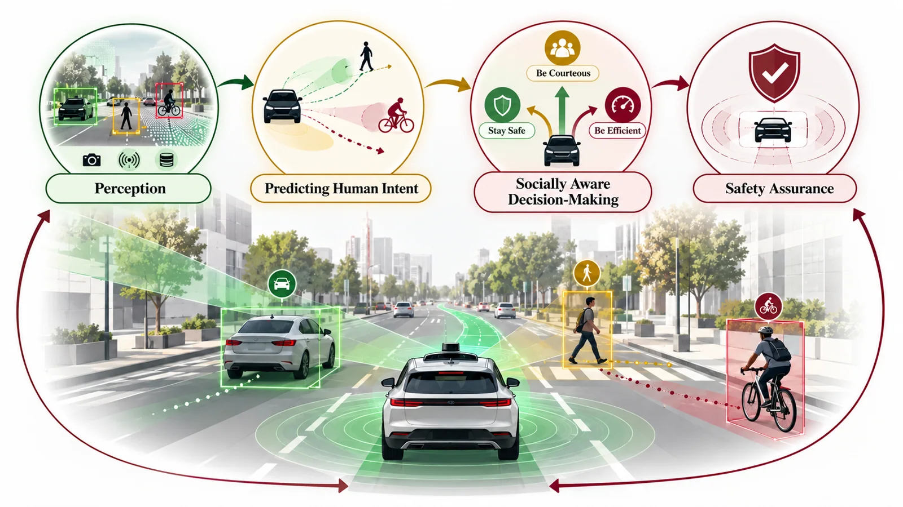
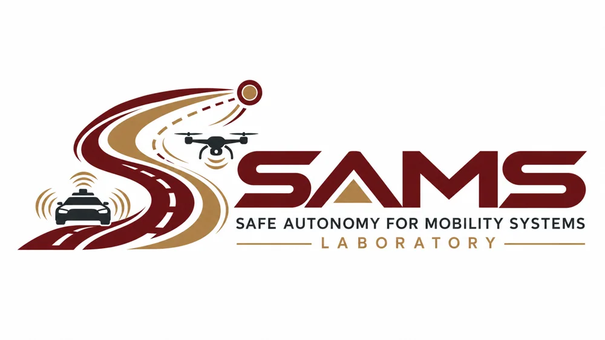
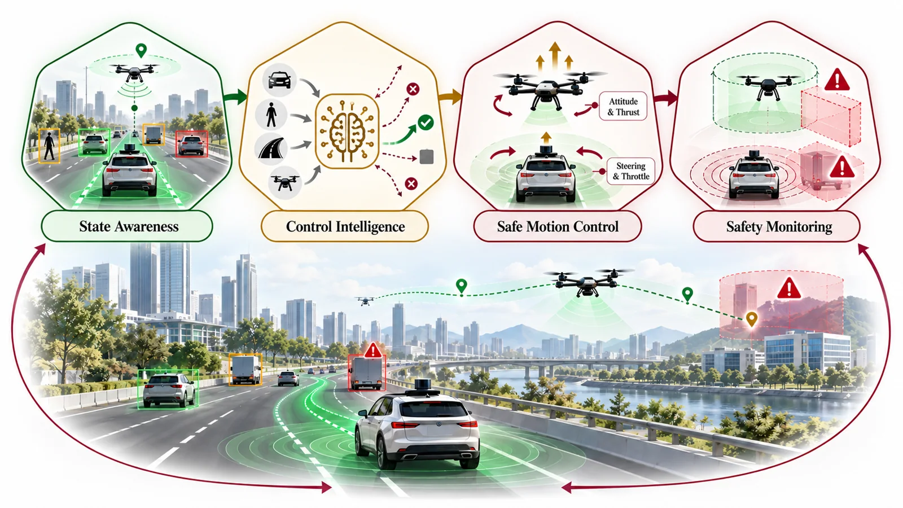
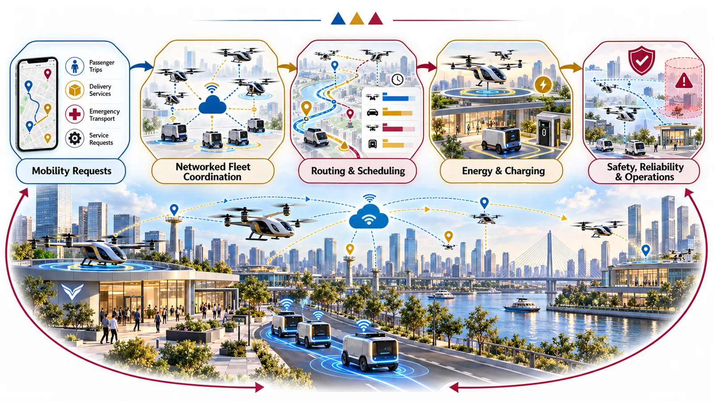

THRUST 01
Interactive & Socially Aware Autonomy
Models and decision policies for understanding human intent, negotiating shared road space, and responding safely in mixed traffic.

SAMS LaboratoryTexas State UniversityResearch agenda
From interpreting human behavior to guaranteeing safe motion and coordinating intelligent mobility networks.

Models and decision policies for understanding human intent, negotiating shared road space, and responding safely in mixed traffic.

Learning and optimal-control architectures that balance real-time performance, robustness, and explicit safety constraints.

Energy-aware planning, distributed coordination, and scheduling for aerial vehicles, eVTOL operations, and heterogeneous robot teams.